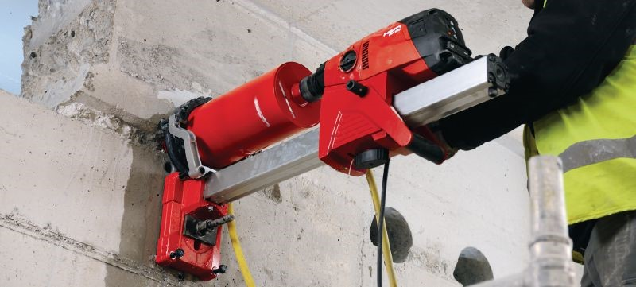
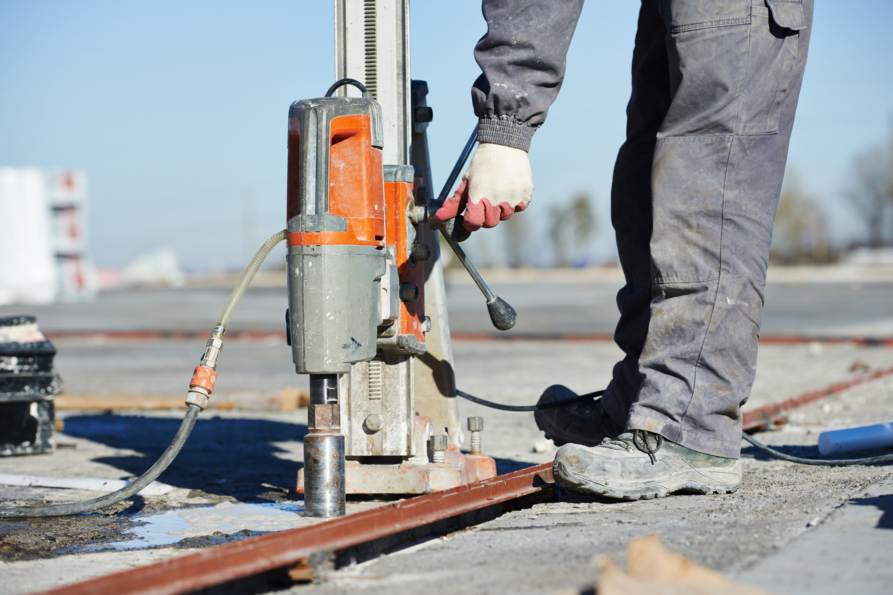

قص وتخريم الخراسانات المسلحة بأحدث الأجهزة وبدون اي تصدعات او شروخ
يعد تكسير وقطع الخرسانة في الرياض من الأمور التي يحتاجها الكثير من العملاء بسبب الحاجة إلى
فتح أماكن لأنابيب المياه
أو الصرف الصحي، أو مد شبكات الكهرباء، أو فتح النوافذ والأبواب، وكلها أعمال تتطلب تكسير وقطع
الخرسانة في الرياض.
لذلك تعمل شركة هضبة الخليج على تنفيذ جميع هذه الأعمال بكفاءة ودقة لن تجدها في أي شركة أخرى،
حيث لدينا أحدث
المعدات التي تساعد على إكمال جميع أعمال التكسير في أسرع وقت ممكن وبأقل تكلفة ممكنة
لذلك لا تتردد في التواصل مع شركة هضبة الخليج لتكسير وقطع الخرسانة في الرياض على رقم الشركة
وهو 0543863168، أو التواصل عبر الواتساب.

نقوم بأعمال التكسير والقطع للخرسانة بالرياض والأسقف على مستوى عالمي من الأداء ومطابقة لجميع
المعايير المتعلقة بجودة أعمال التشطيبات، وذلك بتوفير العمالة المتخصصة من مهندسين إلى فنيين.
كما تتخصص شركتنا في مجال المقاولات العامة والتشطيبات والخرسانة بالرياض
شركة هضبة الخليج تقدم لجميع العملاء أفضل خدمات تكسير وتقطيع الخرسانة بالرياض ، وذلك كجزء من
العديد من أعمال الخرسانة
كما نمتلك الإمكانيات وأحدث المعدات وهذا ما يميز شركة هضبة الخليج عن غيرها في هذا التخصص الذي
تشتهر به بين العملاء بقدراتها وخدماتها الحديثة والمتقدمة.
كما أوضحنا أن لدينا فريق من المهندسين والفنيين على أعلى مستوى من الخبرة في حفر وقص وتكسير
الخرسانة
يمكنك عزيزي العمل أن تطمئن من مستوى الخدمة التى ستحصل عليها لان من يقدمها يعمل بأحترافية
وعلى اسس مدروسة دون أخطاء أو عيوب وبأعلى جودة
تعرف على خدمات شركة تكسير و قص الخرسانة بالرياض

تقدم شركة هضبة الخليج كل الخدمات المتعلقة تكسير و قص الخرسانة بالرياض ومنها الخدمات التالية
1. الفتح في الخرسانة لتركيب شبابيك او ابواب
2. تنفيذ فتحات دائرية لاعمال مواسير المياه والصرف والسباكة والكهرباء
3. القيمام بالفتح في الجدران والاسقف للتهوية
4. عمل فتحات لتركيب التكييف واعمال الجبس بورد
5. جميع انواع عمليات تخريم السقف
6. جميع عمليات قص الخرسانة بكفاءة
اذا كنت ترغب التكسير في الخرسانة او عمل فتحة في الجدار او السقف لكى يتم تمرير كابلات الكهرباء او مواسير الصرف الصحي او السباكة او عمل فتحة للمداخن او الجبس بورد وغيرها يمكنك التواصل مع شركة هضبة الخليج وسوف نقدم لك افضل خدمة وبأقل سعر ودائماً نتيح الكثير من العروض داخل الشركة

تكسير وتقطيع الخرسانة بالرياض
يتطلب تكسير وقص الخرسانة بالرياض إتقاناً كبيراً حتى لا تحدث مشاكل في السقف مثل التشققات
والتشققات التي تحدث ويصعب إصلاحها بعد ذلك.
لذلك يعمل خبراء ومديري شركة هضبة الخليج على مراعاة كافة المعايير المتخصصة عند تنفيذ عمليات
تكسير وتقطيع الخرسانة بالرياض ، كما يحرص جميع عمالنا على استخدام معدات حديثة تسهل عملية
تكسير وقطع الخرسانة بالرياض.
لذلك لا داعي للقلق لأن سقفك سيكون في أيد أمينة ومحترفة يعرفون كيفية تنفيذ جميع أعمال التشطيب
والتشقق في السقف والخرسانة.
حيث أن شركتنا تختلف حقًا عن الشركات الأخرى التي تستخدم عمالة متخصصة غير مدربة ويمكن أن تولد
مشاكل على سطح منزلك وتكلفك الكثير من الأثرياء دون تزويدك بالخدمات التي ترضيك
تستخدم شركة هضبة الخليج الكثير من المعدات والأجهزة التي تسهل تكسير وقطع الخرسانة بالرياض ،
وتشمل هذه المعدات ما يلي:
1. تكسير وقطع الخرسانة بالصواريخ بالرياض والتي تستخدم في تثقيب وقطع الخرسانة المسلحة
2. قطع الماس في الخرسانة
3. آلات تكسير الخرسانة والأسطح بأحجام مختلفة
4. قلب التثقيب الخرساني هو أحد المعدات التي نستخدمها في أعمال التشطيب
نظرًا لوجود جميع المعدات الحديثة التي تمتلكها شركتنا ، فمن المناسب التفاوض على جميع عمليات
تكسير وتقطيع الخرسانة في الرياض بكفاءة وبنفس الشيء
المعايير التي يضعها الضيوف دون أي زيادة أو نقصان على عكس بعض الشركات الأخرى التي تستخدم
الأساليب القديمة التي لا تساعد في الوصول إلى الدقة المطلوبة في تكسير الخرسانة المسلحة
قد يكون هناك زيادة أو نقصان مما يؤدي إلى عدم الكفاءة في تركيب الكهرباء أو السباكة المنزلية ،
لذلك من المريح لك عزيزي العميل التواصل مع شركة محترفة مماثلة لشركتنا
الذي يزود المعدات الخلفية بفنيين أنيقين يمكنهم تنفيذ عمليات التكسير والقص بدقة معروفة لجميع
موظفي الشركة
شركتنا
وبالتالي تسريع التواصل معنا وستستفيدون من خدمات شركة الخليج للأداء وتكون مناسبًا لإتمام جميع
عمليات التكسير وقطع الخرسانة بالرياض.
ما تريده دون الحاجة لوقت طويل وصعوبة كبيرة لأن المعدات الحديثة للغاية تسهل تكسير وتقطيع
الخرسانة المسلحة بالرياض.
بدونها ، لن يكون الفنيون مناسبين لإكمال أعمال التثقيب والسحق بالطريقة التي يريدها الضيوف ،
لذلك عليك أن تسرع في الاتصال بنا في أي وقت.

كيفية قص خرسانة السقف
يحتاج تكسير و قص الخرسانة المسلحة بالرياض الى عناية فائقة حتى ينجح ولذلك تتبع شركتنا الطرق
المدروسة والعملية التي
تحقق افضل النتائج التي ترضى العملاء ومن تلك الخطوات ما يلى
1. يتم معاينة السقف لمعرفة مدى تحمله لعملية القص والتكسير حتى لا يتعرض لحدوث شروح او شقوق
تؤثر عليه وتعرضه للضرر والتصدع
2. يتم استعمال احدث المعدات التي تسهل من عملية التكسير والقص بسرعة وكفاءة بدون مجهود كبير
وذلك بسبب وجود معدات متطورة لدى شركتنا
3. يتم عمل الدعامات للسقف خلال عملية التكسير حتى لا تحدث أي مشكلات تؤثر على سلامة المبنى
والعاملين فيه من الخبراء والمهندسين التابعين لشركتنا
4. يتم انجاز كل عمليات القص والتكسير بسرعة كبيرة وكفاءة ليس لها مثيل لان من يقوموا بها
محترفين في كل عمليات القص والتخريم للسقف
5. طوال فترة العمل يلتزم كل العاملين في شركتنا بمعايير الكفاءة والدقة ولا يمكن ترك أي شيء
للصدفة كما يرتدى كل العاملين ملابس مناسبة لكى توفر لهم الامان خلال العمل في تكسير وقص
الخرسانة المسلحة بالرياض
وبسبب كل تلك الخطوات المدروسة تنتهى كل عمليات القص والتخريم في الخرسانة المسلحة بكفاءة وبدون
حدوث مشكلات
او توقف خلال العمل كما يحدث مع بعض الشركات الاخرى التي تستخدم الطرق التقليدية التي لا تحقق
النتائج المطلوبة
لذلك سارع بالتواصل معنا حتى تتمكن من تنفيذ كل التشطيبات المطلوبة بمستوى دقة وكفاءة مرتفع
بدون تقصير او عيوب في التنفيذ
الكفاءة في تكسير و قص الخرسانة المسلحة
تحتاج اعمال تكسير و قص الخرسانة المسلحة بالرياض لأكبر قدر من الكفاءة حتى تتم بدون احداث أي مشكلات او شروخ في السطح لان ذلك يمكن ان يتسبب في تصدع المنزل كلهلذلك تحرص شركة اداء الخليج على اتباع كل المعايير العلمية السليمة في كل اعمال القص والتخريم في الخرسانة المسلحة كما يمتاز المهندسين والفنيين والعمال الموجودين في شركتنا بالكفاءة والدقة في كل الاعمال التي يقوموا بها ولا يمكن ان يقصروا في كل اعمال التخريم والتكسير التي يقوموا بها
لذلك يكون السقف في أيدى امينة ويتمكن العملاء من تحقيق كل ما يريدوه في منازلهم بسرعة وكفاءة بدون تضييع وقت او تضييع اموال كما يحدث مع بعض الشركات التي لا يعمل بها خبراء وفنيين محترفين
لذلك لا تضيع وقتك مع تلك الشركات وسارع بالتواصل مع شركتنا التي لن تخذلك ابدا وسوف تقدم لك افضل خدمات التكسير والقص التي تريدها في سقف منزلك حتى تتمكن من عمل تمديدات الكهرباء والسباكة والسقف المعلق ومواسير الصرف الصحي